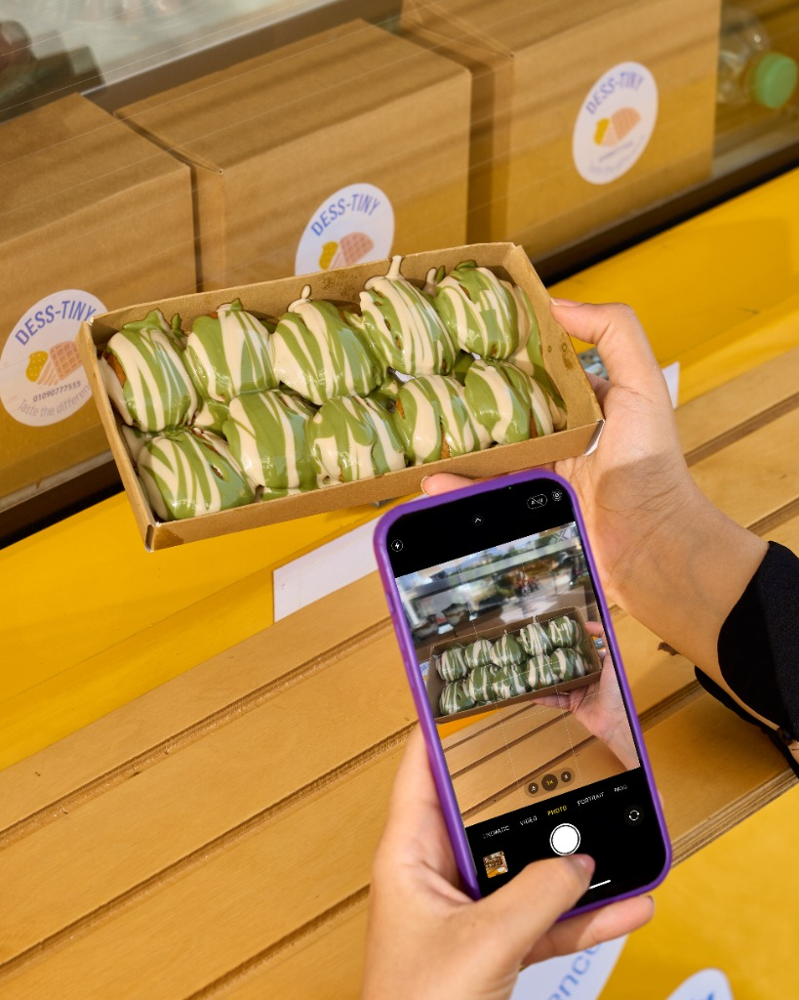
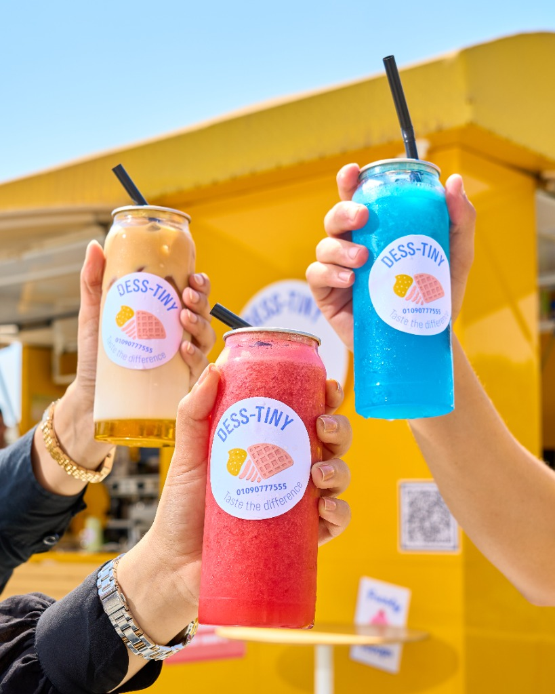
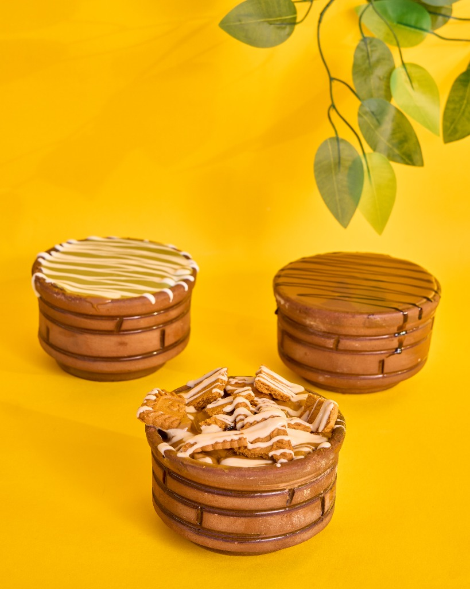

Dess-Tiny is your boarding pass to a world of sweet destinations. More than a dessert truck, we are a moving dessert station where every visit begins with a ticket and ends with a smile. Guided by the belief that every bite leads to your sweetest destination, we design our menu as a flavorful journey—where each dessert represents a stop along the way. From everyday treats to special celebrations, Dess-Tiny arrives at every season, occasion, and happy day as a new station to explore, turning simple moments into joyful memories filled with indulgence, color, and adventure.

Our mission is to create joyful, journey-inspired dessert experiences that celebrate life's seasons and special moments. We aim to be present at every happy day—welcoming customers with a ticket to indulge, explore, and enjoy. Through fresh, high-quality desserts, playful storytelling, and seasonal "stations," we strive to build lasting connections, spark excitement, and deliver consistent quality. At Dess-Tiny, every customer is a traveler, every season is a new destination, and every bite is a step closer to happiness.

We envision Dess-Tiny as a place where happiness has a destination and every memory begins with a ticket. Our dream is to become a beloved dessert stop woven into life's most joyful moments—the seasons that change, the celebrations we cherish, and the small happy days we never forget. We imagine a world where our truck feels like a familiar station people return to, again and again, to collect sweet memories, share laughter, and pause time for just a bite. Through imagination, warmth, and indulgence, Dess-Tiny aspires to be more than a dessert experience—to be a feeling, a journey, and a sweet tradition in the hearts of our travelers.
